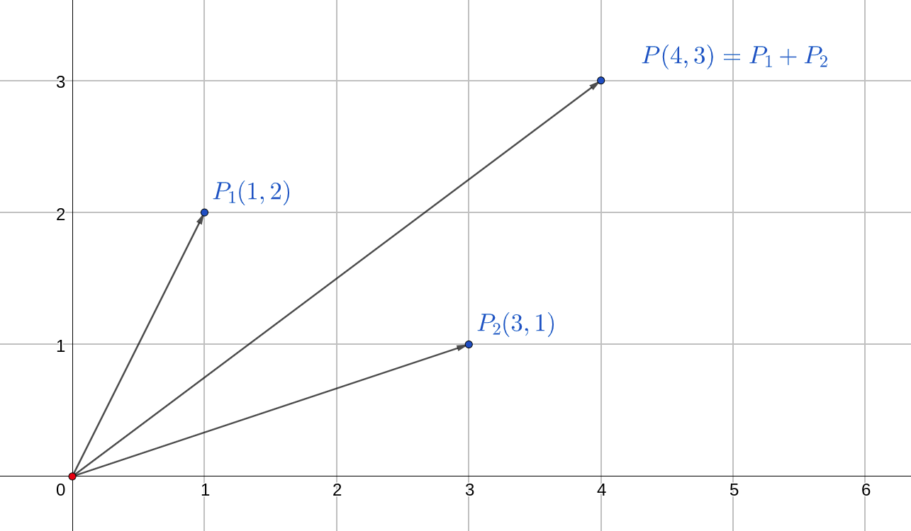
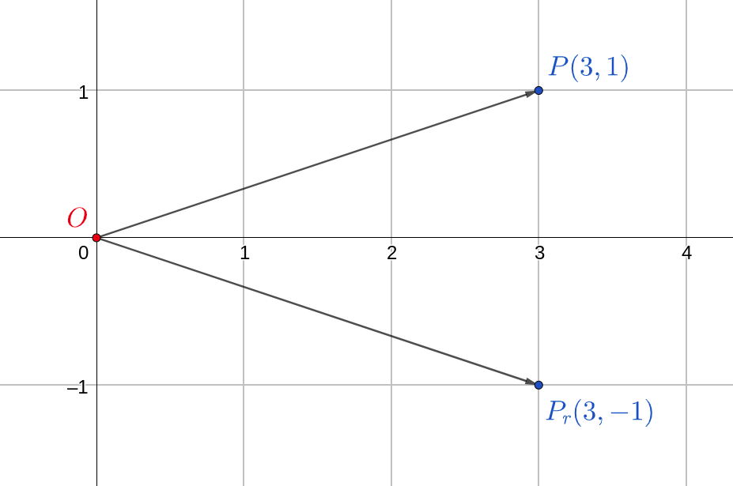

Lesson 8.4
We will take up one final example of classes in action. This is to demonstrate few important points about OOP along the way.
Vector: Mathematical Preliminaries
To each point \(P(x, y)\) in 2D space, we can associate what is called a vector. Geometrically, this is a directed arrow from the origin to the point \(P\). That is, one tip of the vector will always be the origin and the other tip, also called the head of the vector, will be at the point \(P\). Here, \(P_1\) and \(P_2\) are two vectors:
Some operations on vectors:
Magnitude
The magnitude of a vector \(P(x, y)\) is the length of the line segment \(OP\): \[ |OP| = \sqrt{x^2 + y^2} \]
Scale
A vector can be scaled by a value \(s\). Scaling modifies the length of the vector without changing the direction in which it is pointing at. This is equivalent to the following transformation: \[ s \cdot (x, y) \rightarrow (sx, sy) \]
Add
Two vectors \(P_1(x_1, y_1)\) and \(P_2(x_2, y_2)\) can be added in the following manner: \[ (x_1, y_1) + (x_2, y_2) = (x_1 + x_2, y_1 + y_2) \] For example:

Reflect
A vector can be rotated about the origin. A particular instance of rotation is reflection about an axis. For example, \(P_r\) is the reflection of \(P\) about the X-axis:

This corresponds to the transformation: \[ (x, y) \rightarrow (x, -y) \]
Vector: Specification
From the mathematical vector, we need to transition to the programmatic vector. The bridge between these two states is the specification. In this step, we come up with a written description of the attributes and methods that our Vector class should possess. The source for this information comes from the mathematical vector that we just studied.
The following is the specification of the Vector class:
Attributes
x: the x-coordinate of the vectory: the y-coordinate of the vector
This choice is sufficient as any mathematical vector in 2D space can be completely defined with these two attributes.
Methods
#!py __init__(): constructor of the class; populate the attributes based on the arguments#!py __str__(): return the coordinates of the vector in the form(x,y)when you call the#!py str()or#!py print()functions on aVectorobject.#!py magnitude(): return the magnitude of the vector#!py scale(): scale the vector by some number, \(s\); this transformation should be applied on the current vector#!py rotate_xaxis(): reflect the vector about the X-axis; this transformation should be applied on the current vector#!py rotate_yaxis(): reflect the vector about the Y-axis; this transformation should be applied on the current vector#!py add(): accept a vector as argument; return the sum of this argument with the current vector
Vector: Definition
The stage is now set to define the class:
class Vector:
def __init__(self, x, y):
self.x, self.y = x, y
def print(self):
return f'({self.x},{self.y})'
def magnitude(self):
return (self.x ** 2 + self.y ** 2) ** 0.5
def scale(self, s):
self.x, self.y = self.x * s, self.y * s
def rotate_xaxis(self):
self.y = -self.y
def rotate_yaxis(self):
self.x = -self.x
def add(self, P):
result = Vector(0, 0)
result.x, result.y = self.x + P.x, self.y + P.y
return resultMost methods are self-explanatory. Some require closer attention. Note that all methods except #!py add() and #!py __str__() do not return any value. These are methods that transform the vector itself. The method #!py add() however is interesting. It accepts a vector P as an argument! Within the method, a new Vector object is defined, it is the zero-vector. The current vector is added with P and result is stored in the newly created vector result. This is finally returned.
Collection of Vectors
The whole point of having a class is to have objects. The class is just a template. Consider the following use case of a collection of objects:
The list triangle is a collection of objects of type Vector. In this instance, triangle represents the following triangle:

We could now ask various questions here, one of which is this: how do we compute the lengths of the sides of this triangle?
def dist(P1, P2):
return ((P1.x - P2.x) ** 2 + (P1.y - P2.y) ** 2) ** 0.5
def side_lengths(triangle):
la = dist(triangle[0], triangle[1])
lb = dist(triangle[1], triangle[2])
lc = dist(triangle[2], triangle[0])
return la, lb, lcIn this way, we could also define a square to be a list of four vectors. That brings to a close the discussion on object oriented programming in Python. We will cover these concepts in greater detail when we study Java.